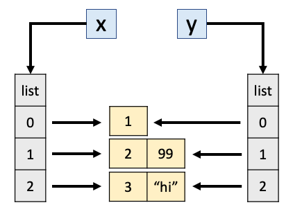
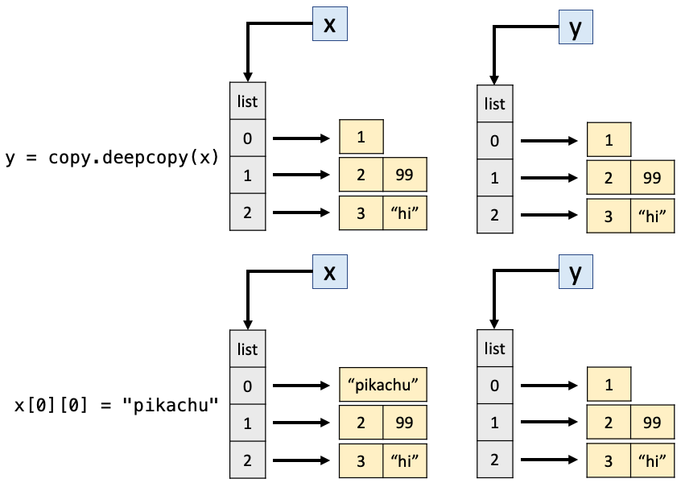

Lecture 7: Functions & Testing#
Lecture learning objectives#
Define a function and an anonymous function in Python
Describe the difference between positional and keyword arguments
Describe the difference between local and global arguments
Apply the DRY principle to write modular code
Assess whether a function has side effects
Write a docstring for a function that describes parameters, return values, behaviour and usage
Write a try/except statement
Explain the notion of scoping in Python
Predict whether a function modifies a global variable with scope outside of the function definition.
Formulate a test case to prove a function design specification
Use an assert statement to validate a test case
Functions#
Define a function to re-use a block of code with different inputs.
Function definition syntax:
def function(param1=arg1, param2=arg2, ...):
# do something
output = ...
return output
Functions begin with the
defkeyword, then the function name, parameters/arguments in parentheses, and then a colon (:)The function block defined by indentation
Output or “return” value of the function is given by the
returnkeyword
For example, suppose that we want to compute the probability density function of the normal distribution, which is given by:
$$ f(x) = \frac{1}{\sigma\sqrt{2\pi}} e^{-\frac{1}{2}\left(\frac{x - \mu}{\sigma}\right)^2} $$
Let’s assume that we want to compute $ f(2) $ for a mean of $ \mu = 2.5 $ and variance of $ \sigma = 0.3 $:
import math
(1 / (0.3 * (2 * math.pi)**0.5)) * math.exp(-0.5 * ((2 - 2.5) / 0.3)**2)
0.3315904626424956
With a function, we can abstract things and avoid repetition:
def pdf_normal(x, μ, σ):
prefactor = (1 / (σ * (2 * math.pi)**0.5))
exp_value = math.exp(-0.5 * ((x - μ) / σ)**2)
pdf = prefactor * exp_value
return pdf
pdf_normal(2, 2.5, 0.3)
0.3315904626424956
pdf_normal(1, 0, 1)
0.24197072451914337
Functions and Data Science#
Reminder from Worksheet 1#
import pandas as pd
url = "https://raw.githubusercontent.com/rfordatascience/tidytuesday/master/data/2020/2020-02-18/food_consumption.csv"
df = pd.read_csv(url)
df.columns
Index(['country', 'food_category', 'consumption', 'co2_emmission'], dtype='object')
How many different kinds of foods are there in the dataset? How many countries are in the dataset?
n_food = df["food_category"].nunique() # Week 1 SOLUTION
n_country = df["country"].nunique() # Week 1 SOLUTION
What if we want to do this for an arbitrary DataFrame and column?
def count_kind(df, column_name):
count = df[column_name].nunique()
return count
count_kind(df, "food_category")
11
Can we read modify this so that it takes the url as an input?
def count_kind(url, column_name):
df = pd.read_csv(url)
count = df[column_name].nunique()
return count
count_kind(url, "food_category")
11
Side effects & local variables#
When you create a variable inside a function, it is local, which means that it only exists inside the function. For example:
import numpy as np
def sum_arrays(array_1, array_2):
final_array = array_1 + array_2
return final_array
array_1 = np.array([1,1,1])
array_2 = np.array([2,2,2])
sum_arrays(array_1, array_2)
array([3, 3, 3])
final_array
---------------------------------------------------------------------------
NameError Traceback (most recent call last)
Cell In[14], line 1
----> 1 final_array
NameError: name 'final_array' is not defined
If a function does anything other than returning a value, it is said to have side effects. An example of this is when a function changes the variables passed into it, or when a function prints something to the screen.
Example:
def silly_sum(my_list):
my_list.append(8.5)
return sum(my_list)
nums = [1, 2, 3, 4]
out = silly_sum(nums)
out
18.5
Looks like what we wanted.
But wait… it changed our
numsobject…
nums
[1, 2, 3, 4, 8.5]
What if we do this with a numpy array?
def silly_sum_np(my_array):
my_array = np.append(my_array, 8.5)
return my_array.sum()
test_array = np.array([1, 2, 3, 4])
np_out = silly_sum_np(test_array)
np_out
np.float64(18.5)
test_array
array([1, 2, 3, 4])
If your function has side effects, you must mention it in the documentation (later today).
None return type#
If you do not specify a return value, the function returns
Nonewhen it terminates:
def f(x):
x + 1 # no return!
if x == 999:
print('x = 999!')
print(f(999))
x = 999!
None
Optional & required arguments#
Sometimes it is convenient to have default values for some arguments in a function.
Because they have default values, these arguments are optional, hence “optional arguments”
Example:
def magnify_numbers(s, n=2):
return s*n
magnify_numbers(np.array([1,2]), 2)
array([2, 4])
magnify_numbers(np.array([1,2]), 5)
array([ 5, 10])
magnify_numbers(np.array([1,2])) # do not specify `n`; it is optional
array([2, 4])
You can have any number of required arguments and any number of default arguments
All the default arguments must come after the required arguments
The required arguments are mapped by the order they appear
The default arguments can be specified out of order
def example(a, b, c="DEFAULT", d="DEFAULT"):
print(a, b, c, d)
example(1, 2, 3, 4)
1 2 3 4
example(1, b = 2, c = 3, d = 4)
1 2 3 4
Using the defaults for
candd:
example(1, 2)
1 2 DEFAULT DEFAULT
Specifying
canddas keyword arguments (i.e. by name):
example(1, 2, c=3, d=4)
1 2 3 4
Specifying only one of the optional arguments, by keyword:
example(1, 2, c=3)
1 2 3 DEFAULT
Specifying all the arguments as keyword arguments, even though only
canddare optional:
example(a=1, b=2, c=3, d=4)
1 2 3 4
Specifying
cby the fact that it comes 3rd (I do not recommend this because I find it is confusing):
example(1, 2, 3)
1 2 3 DEFAULT
Specifying the optional arguments by keyword, but out of order:
example(1, 2, d=4, c=3)
1 2 3 4
Specifying the non-optional arguments by keyword (I am fine with this):
example(a=1, b=2)
1 2 DEFAULT DEFAULT
Specifying the non-optional arguments by keyword, but in the wrong order (not recommended, I find it confusing):
example(b=2, a=1)
1 2 DEFAULT DEFAULT
Specifying keyword arguments before non-keyword arguments (this throws an error):
example(a=2, 1)
Cell In[36], line 1
example(a=2, 1)
^
SyntaxError: positional argument follows keyword argument
In general, I am used to calling non-optional arguments by order, and optional arguments by keyword.
The language allows us to deviate from this, but it can be unnecessarily confusing sometimes.
Ideally, the default should be carefully chosen.
Here, the idea of “repeating” something makes me think of having 2 copies, so
n=2feels like a sane default.
Multiple return values#
In many programming languages, functions can only return one object
That is technically true in Python, but there is a “workaround”, which is to return a tuple.
def mean_and_median(x):
return (np.mean(x), np.median(x))
mean_and_median([1,2,3,4,5])
(np.float64(3.0), np.float64(3.0))
The parentheses can be omitted in this case, and a
tupleis implicitly returned as defined by the use of the comma:
def mean_and_median(x):
return np.mean(x), np.median(x)
mean_and_median([1,2,3,4,5])
(np.float64(3.0), np.float64(3.0))
It is common to immediately unpack a returned tuple into separate variables, so it really feels like the function is returning multiple values:
s, p = mean_and_median([1,2,3.2,4,5])
s
np.float64(3.04)
p
np.float64(3.2)
As an aside, it is conventional in Python to use
_for values you don’t want:
s, _ = mean_and_median([1,2,3.2,4,5])
s
np.float64(3.04)
_
np.float64(3.2)
Passing Multiple Arguments to a Function#
def my_sum(a, b):
return a + b
This function works fine, but it’s limited to only two arguments.
What if you need to sum a varying number of arguments, where the specific number of arguments passed is only determined at runtime?
Wouldn’t it be great to create a function that could sum all the integers passed to it, no matter how many there are?
You can also call/define functions that accept an arbitrary number of positional or keyword arguments using
*argsand**kwargs. See, e.g. here
def add(*args):
print(args)
return sum(args)
add(1, 2, 3, 4, 5 , 6)
(1, 2, 3, 4, 5, 6)
21
**kwargs works just like *args, but instead of accepting positional arguments it accepts keyword (or named) arguments
def add(**kwargs):
print(kwargs)
return sum(kwargs.values())
add(a=3, b=4, c=5)
{'a': 3, 'b': 4, 'c': 5}
12
Do not instantiate objects (like empty lists) in the function definition - see here under “Mutable Default Arguments”
def example(a, b=[]): # don't do this!
b.append(a)
return b
example(1)
[1]
example(2) # the list inside the function persists and got appended to!
[1, 2]
example(2)
[1, 2, 2]
def example(a, b=None): # instead, do this
if b is None:
b = []
b.append(a)
return b
example(1)
[1]
example(2)
[2]
Functions as a data type#
In Python, functions are a data type just like anything else.
def do_nothing(x):
return x
type(do_nothing)
function
print(do_nothing)
<function do_nothing at 0x10fa3ccc0>
This means you can pass functions as arguments into other functions.
def square(y):
return y**2
def evaluate_function_on_x_plus_1(fun, x):
return fun(x+1)
evaluate_function_on_x_plus_1(square, 5)
36
Above: what happened here?
fun(x+1)becomessquare(5+1)square(6)becomes36
You can also write functions that return functions, or define functions inside of other functions.
We’ll see examples of this when we get to classes & decorators
Anonymous functions#
There are two ways to define functions in Python:
def add_one(x):
return x+1
add_one(7.2)
8.2
lambda x: x+1
<function __main__.<lambda>(x)>
type(lambda x: x+1)
function
(lambda x: x+1)(7.2)
8.2
The two approaches above are identical. The one with
lambdais called an anonymous function.Anonymous functions can only take up one line of code, so they aren’t appropriate in most cases, but can be useful for smaller things
evaluate_function_on_x_plus_1(lambda x: x ** 2, 5)
36
Above:
First,
lambda x: x**2evaluates to a value of typefunctionNotice that this function is never given a name - hence “anonymous functions” !
Then, the function and the integer
5are passed intoevaluate_function_on_x_plus_1At which point the anonymous function is evaluated on
5+1, and we get36.
Anonymous functions can have multiple arguments, as well as multiple outputs:
(lambda x, y: (x+y, x-y, x**y))(5, 2)
(7, 3, 25)
DRY principle: designing good functions#
DRY: Don’t Repeat Yourself
Consider the task of, for each element of a list, turning it into a palindrome
e.g. “mike” => “mikeekim”
names = ["hedayat", "scott", "prajeet"]
name = "hedayat"
name[::-1] # creates a slice that starts at the end and moves backwards, syntax is [begin:end:step]
'tayadeh'
names_backwards = list()
names_backwards.append(names[0] + names[0][::-1])
names_backwards.append(names[1] + names[1][::-1])
names_backwards.append(names[2] + names[2][::-1])
names_backwards
['hedayattayadeh', 'scottttocs', 'prajeetteejarp']
Above: this is gross and terrible coding:
It only works for a list with 3 elements
It only works for a list named
namesIf we want to change its functionality, we need to change 3 similar lines of code (Don’t Repeat Yourself!!)
It is hard to understand what it does just by looking at it
names_backwards = list()
for name in names:
names_backwards.append(name + name[::-1])
names_backwards
['hedayattayadeh', 'scottttocs', 'prajeetteejarp']
Above: this is slightly better. We have solved problems (1) and (3).
But let’s create a function to make our life easier
def make_palindromes(names):
names_backwards = []
for name in names:
names_backwards.append(name + name[::-1])
return names_backwards
make_palindromes(names)
['hedayattayadeh', 'scottttocs', 'prajeetteejarp']
Above: this is even better. We have now also solved problem (2), because you can call the function with any list, not just
names.For example, what if we had multiple lists:
names1 = ["hedayat", "scott", "prajeet"]
names2 = ["apple", "orange", "banana", "strawberry"]
make_palindromes(names1)
['hedayattayadeh', 'scottttocs', 'prajeetteejarp']
make_palindromes(names2)
['appleelppa', 'orangeegnaro', 'bananaananab', 'strawberryyrrebwarts']
Designing good functions#
How far you go and how you choose to apply the DRY principle is up to you and the programming context
These decisions are often ambiguous. For example:
Should
make_palindromesbe a function if I’m only ever doing it once? Twice?Should the loop be inside the function, or outside?
Or should there be TWO functions, one that loops over the other??
In my personal opinion,
make_palindromesdoes a bit too much to be understandable.I prefer this:
def make_palindrome(name):
return name + name[::-1]
make_palindrome("hedayat")
'hedayattayadeh'
From here, we want to “apply
make_palindrometo every element of a list”We could do this with list comprehension
[make_palindrome(name) for name in names]
['hedayattayadeh', 'scottttocs', 'prajeetteejarp']
Or there is also the in-built
map()function which does exactly this, applies a function to every element of a sequence
list(map(make_palindrome, names))
['hedayattayadeh', 'scottttocs', 'prajeetteejarp']
(Optional) Generators#
Recall list comprehension from the previous lecture
[n for n in range(10)]
[0, 1, 2, 3, 4, 5, 6, 7, 8, 9]
Comprehensions evaluate the entire expression at once, and then return the full data product
Sometimes, we want to work with just one part of our data at a time, for example, when we can’t fit all of our data in memory (I’ll show an example of this a little later)
For this, we can use generators (you’ll see more of these when we get to DSCI 572!)
(n for n in range(10))
<generator object <genexpr> at 0x10fa74040>
Notice that we just created a
generator objectGenerator objects are like a “recipe” for generating values
They don’t actually do any computation until they are asked to
We can get values from a generator in three main ways:
Using
next()Using
list()Looping
gen = (n for n in range(10))
next(gen)
0
next(gen)
1
list(gen)
[2, 3, 4, 5, 6, 7, 8, 9]
But once the generator is exhausted, it will no longer return values:
gen = (n for n in range(10))
for i in range(11):
print(next(gen))
0
1
2
3
4
5
6
7
8
9
---------------------------------------------------------------------------
StopIteration Traceback (most recent call last)
Cell In[89], line 3
1 gen = (n for n in range(10))
2 for i in range(11):
----> 3 print(next(gen))
StopIteration:
We can see all the values of a generator using
list()but this defeats the purpose of using a generator in the first place
gen = (n for n in range(10))
list(gen)
[0, 1, 2, 3, 4, 5, 6, 7, 8, 9]
Finally, we can loop over generator objects too
gen = (n for n in range(10))
for i in gen:
print(i)
0
1
2
3
4
5
6
7
8
9
Above, we saw how to create a generator object using comprehension syntax but with parentheses
We can also create a generator using functions and the
yieldkeyword (instead of thereturnkeyword)
def gen():
for n in range(10):
yield (n, n ** 2)
g = gen()
print(next(g))
print(next(g))
print(next(g))
list(g)
(0, 0)
(1, 1)
(2, 4)
[(3, 9), (4, 16), (5, 25), (6, 36), (7, 49), (8, 64), (9, 81)]
Generators can thought of as state-preserving functions.
This means that a generator keeps track of what items have been already generated, and what the state of the generator is at any point.
We’ll work with generators more when we get to 572 and other ML courses where we are often working with large datasets (images are especially memory-consuming!)
But so you keep them in the back of your mind, below is some real-world motivation of a case where a generator might be useful
Say we want to create a list of dictionaries containing information about houses in Canada
# !conda install -y memory_profiler
import random
import time
import memory_profiler
city = ['Vancouver', 'Toronto', 'Ottawa',
'Montreal', 'Edmonton', 'Calgary']
---------------------------------------------------------------------------
ModuleNotFoundError Traceback (most recent call last)
Cell In[95], line 3
1 import random
2 import time
----> 3 import memory_profiler
4 city = ['Vancouver', 'Toronto', 'Ottawa',
5 'Montreal', 'Edmonton', 'Calgary']
ModuleNotFoundError: No module named 'memory_profiler'
def house_list(n):
houses = []
for i in range(n):
house = {
'id': i,
'city': random.choice(city),
'bedrooms': random.randint(1, 5),
'bathrooms': random.randint(1, 3),
'price ($1000s)': random.randint(300, 1000)
}
houses.append(house)
return houses
house_list(2)
---------------------------------------------------------------------------
NameError Traceback (most recent call last)
Cell In[97], line 1
----> 1 house_list(2)
Cell In[96], line 6, in house_list(n)
2 houses = []
3 for i in range(n):
4 house = {
5 'id': i,
----> 6 'city': random.choice(city),
7 'bedrooms': random.randint(1, 5),
8 'bathrooms': random.randint(1, 3),
9 'price ($1000s)': random.randint(300, 1000)
10 }
11 houses.append(house)
12 return houses
NameError: name 'city' is not defined
What happens if we want to create a list of 1,000,000 houses?
How much time/memory will it take?
start = time.time()
print(f"Memory usage before: {memory_profiler.memory_usage()[0]:.0f} MB")
result_list = house_list(1_000_000)
print(f"Memory usage after: {memory_profiler.memory_usage()[0]:.0f} MB")
print(f"Time taken: {time.time() - start:.2f}s")
---------------------------------------------------------------------------
NameError Traceback (most recent call last)
Cell In[98], line 2
1 start = time.time()
----> 2 print(f"Memory usage before: {memory_profiler.memory_usage()[0]:.0f} MB")
4 result_list = house_list(1_000_000)
6 print(f"Memory usage after: {memory_profiler.memory_usage()[0]:.0f} MB")
NameError: name 'memory_profiler' is not defined
def house_generator(n):
for i in range(n):
house = {
'id': i,
'city': random.choice(city),
'bedrooms': random.randint(1, 5),
'bathrooms': random.randint(1, 3),
'price ($1000s)': random.randint(300, 1000)
}
yield house
start = time.time()
print(f"Memory usage before: {memory_profiler.memory_usage()[0]:.0f} MB")
result_gen = house_generator(1_000_000)
print(f"Memory usage after: {memory_profiler.memory_usage()[0]:.0f} MB")
print(f"Time taken: {time.time() - start:.2f}s")
---------------------------------------------------------------------------
NameError Traceback (most recent call last)
Cell In[100], line 2
1 start = time.time()
----> 2 print(f"Memory usage before: {memory_profiler.memory_usage()[0]:.0f} MB")
4 result_gen = house_generator(1_000_000)
6 print(f"Memory usage after: {memory_profiler.memory_usage()[0]:.0f} MB")
NameError: name 'memory_profiler' is not defined
next(result_gen)
---------------------------------------------------------------------------
NameError Traceback (most recent call last)
Cell In[101], line 1
----> 1 next(result_gen)
NameError: name 'result_gen' is not defined
Although, if we used
list()to extract all of the genertator values, we’d lose our memory savings
print(f"Memory usage before: {memory_profiler.memory_usage()[0]:.0f} MB")
result_gen = list(house_generator(1_000_000))
print(f"Memory usage after: {memory_profiler.memory_usage()[0]:.0f} MB")
---------------------------------------------------------------------------
NameError Traceback (most recent call last)
Cell In[102], line 1
----> 1 print(f"Memory usage before: {memory_profiler.memory_usage()[0]:.0f} MB")
3 result_gen = list(house_generator(1_000_000))
5 print(f"Memory usage after: {memory_profiler.memory_usage()[0]:.0f} MB")
NameError: name 'memory_profiler' is not defined
Other function design considerations:
Should we print output or produce plots inside or outside functions?
I would usually say outside, because this is a “side effect” of sorts
Although there are certainly cases where I do plot or print within a function
In these cases I usually add a function argument such as
plot=Falseorverbose=0that allows users to control this behaviour.
Should the function do one thing or many things?
This is a tough one, hard to answer in general, depends on the situation and programming style
Docstrings#
One problem we never really solved when talking about writing good functions was: “4. It is hard to understand what it does just by looking at it”
Enter the idea of function documentation, called “docstrings”
The docstring goes right after the
defline and is wrapped in triple quotes"""
def make_palindrome(string):
"""Turns the string into a palindrome by concatenating itself with a reversed version of itself."""
return string + string[::-1]
In IPython/Jupyter, we can use
?to view the documentation string of any function in our environment.
make_palindrome?
But, even easier than that, if your cursor is in the function parentheses, you can use the shortcut
shift + tabto open the docstring at will
make_palindrome('uncomment and try pressing shift+tab here.')
'uncomment and try pressing shift+tab here..ereh bat+tfihs gnisserp yrt dna tnemmocnu'
Docstring structure#
General docstring convention in Python is described in PEP 257 - Docstring Conventions.
There are many different docstring style conventions used in Python.
The exact style you use can be important for helping you to render your documentation (more on that in a later course), or for helping your IDE parse your documentation.
Common styles include:
Single-line: If it’s short, then just a single line describing the function will do (as above).
reST style: see here.
NumPy/SciPy style: see here. (RECOMMENDED! and MDS-preferred)
Google style: see here.
The NumPy/Scipy style:
def function_name(param1, param2, param3):
"""First line is a short description of the function.
A paragraph describing in a bit more detail what the
function does and what algorithms it uses and common
use cases.
Parameters
----------
param1 : datatype
A description of param1.
param2 : datatype
A description of param2.
param3 : datatype
A longer description because maybe this requires
more explanation and we can use several lines.
Returns
-------
datatype
A description of the output, datatypes and behaviours.
Describe special cases and anything the user needs to
know to use the function.
Examples
--------
>>> function_name(3,8,-5)
2.0
"""
def make_palindrome(string):
"""Turns the string into a palindrome by concatenating
itself with a reversed version of itself.
Parameters
----------
string : str
The string to turn into a palindrome.
Returns
-------
str
string concatenated with a reversed version of string
Examples
--------
>>> make_palindrome('blah')
'blahhalb'
"""
return string + string[::-1]
# make_palindrome?
print(make_palindrome.__doc__)
Turns the string into a palindrome by concatenating
itself with a reversed version of itself.
Parameters
----------
string : str
The string to turn into a palindrome.
Returns
-------
str
string concatenated with a reversed version of string
Examples
--------
>>> make_palindrome('blah')
'blahhalb'
Docstrings in your labs#
In MDS we will accept:
One-line docstrings for very simple functions.
Either the PEP-8 or NumPy/SciPy style for bigger functions.
But we think the NumPy/SciPy style is more common in the wild so you may want to get into the habit of using it.
Docstrings with optional arguments#
When specifying the parameters, we specify the defaults for optional arguments:
# NumPy/SciPy style
def repeat_string(s, n=2):
"""
Repeat the string s, n times.
Parameters
----------
s : str
the string
n : int, optional
the number of times, by default = 2
Returns
-------
str
the repeated string
Examples
--------
>>> repeat_string("Blah", 3)
"BlahBlahBlah"
"""
return s * n
Type hinting#
Type hinting is exactly what it sounds like, it hints at the data type of function arguments
You can indicate the type of an argument in a function using the syntax
argument : dtype, and the type of the return value usingdef func() -> dtypeLet’s see an example:
# NumPy/SciPy style
def repeat_string(s: str, n: int = 2) -> str: # <- note the type hinting here
"""
Repeat the string s, n times.
Parameters
----------
s : str
the string
n : int, optional (default = 2)
the number of times
Returns
-------
str
the repeated string
Examples
--------
>>> repeat_string("Blah", 3)
"BlahBlahBlah"
"""
return s * n
repeat_string?
Type hinting just helps your users and IDE identify dtypes and identify bugs
It’s just another level of documentation
They do not force users to use that dtype, for example, I can still pass an
dicttorepeat_stringif I want to:
repeat_string({'key_1': 1, 'key_2': 2})
---------------------------------------------------------------------------
TypeError Traceback (most recent call last)
Cell In[112], line 1
----> 1 repeat_string({'key_1': 1, 'key_2': 2})
Cell In[110], line 23, in repeat_string(s, n)
2 def repeat_string(s: str, n: int = 2) -> str: # <- note the type hinting here
3 """
4 Repeat the string s, n times.
5
(...)
21 "BlahBlahBlah"
22 """
---> 23 return s * n
TypeError: unsupported operand type(s) for *: 'dict' and 'int'
Can we do so with numpy and pandas as well? Of course!
import numpy as np
import pandas as pd
def go_wild(s: pd.DataFrame, n:np.ndarray) -> str:
pass
Further, IDE’s (e.g VS Code) are clever enough to even read your type hinting and warn you if you’re using a different dtype in the function.
You don’t have to use type hinting in MDS, but it is highly recommended to get into the practice of doing so
Automatically generated documentation#
As mentioned before, docstring formatting is important if you want to use standard tools for rendering your documentation into readable, accessible documents using libraries like sphinx, pydoc or Doxygen.
For example: compare this documentation with this code.
Notice the similarities? The webpage was automatically generated because the authors used standard conventions for docstrings!
You’ll have to use some string methods to extract information from a docstring in lab 1.
The website for this course is built with Jupyter Book which leverages some of the above libraries.
try / except#
If something goes wrong, we don’t want our code to crash - we want it to fail gracefully.
In Python, this can be accomplished using
try/exceptstatements
try:
# code that might raise an exception
except ExceptionType:
# code to handle the exception
Here is a basic example:
this_variable_does_not_exist
print("Another line") # code fails before getting to this line
---------------------------------------------------------------------------
NameError Traceback (most recent call last)
Cell In[114], line 1
----> 1 this_variable_does_not_exist
2 print("Another line") # code fails before getting to this line
NameError: name 'this_variable_does_not_exist' is not defined
try:
this_variable_does_not_exist
except:
pass # do nothing
print("You did something bad! But I won't raise an error.")
You did something bad! But I won't raise an error.
Python tries to execute the code in the
tryblock.If an error is encountered, we “catch” this in the
exceptblock (also calledtry/catchin other languages).
There are many different error types, or exceptions - we saw
NameErrorabove.
5 / 0 # ZeroDivisionError
---------------------------------------------------------------------------
ZeroDivisionError Traceback (most recent call last)
Cell In[116], line 1
----> 1 5 / 0 # ZeroDivisionError
ZeroDivisionError: division by zero
my_list = [1, 2, 3]
my_list[5] # IndexError
---------------------------------------------------------------------------
IndexError Traceback (most recent call last)
Cell In[117], line 2
1 my_list = [1, 2, 3]
----> 2 my_list[5] # IndexError
IndexError: list index out of range
my_tuple = (1, 2, 3)
my_tuple[0] = 0 # TypeError
---------------------------------------------------------------------------
TypeError Traceback (most recent call last)
Cell In[118], line 2
1 my_tuple = (1, 2, 3)
----> 2 my_tuple[0] = 0 # TypeError
TypeError: 'tuple' object does not support item assignment
Ok, so there are apparently a bunch of different errors one could run into.
With
try/exceptyou can also catch the exception itself:
try:
this_variable_does_not_exist
except Exception as ex:
print("You did something bad!")
print(ex)
print(type(ex))
You did something bad!
name 'this_variable_does_not_exist' is not defined
<class 'NameError'>
In the above, we caught the exception and assigned it to the variable
exso that we could print it out.This is useful because you can see what the error message would have been, without crashing your program.
You can also catch specific exceptions types
This is typically the recommended way to catch errors, you want to be specific in catching your error so you know exactly where and why your code failed.
try:
# this_variable_does_not_exist # name error
# (1, 2, 3)[0] = 1 # type error
5/0 # ZeroDivisionError
except TypeError:
print("You made a type error!")
except NameError:
print("You made a name error!")
except:
print("You made some other sort of error")
You made some other sort of error
The last
exceptwould trigger if the error is none of the above types.
There is also an optional
elseandfinallykeyword, read more here
try:
x = int(input("Enter x:"))
y = int(input("Enter y:"))
z = x / y
except ValueError:
print("You didn't enter a number!")
except ZeroDivisionError:
print("Why would you divide by zero?")
else:
print("z**2 = ", z**2)
finally:
print("Here I am anyway 😈")
Here I am anyway 😈
---------------------------------------------------------------------------
StdinNotImplementedError Traceback (most recent call last)
Cell In[121], line 2
1 try:
----> 2 x = int(input("Enter x:"))
3 y = int(input("Enter y:"))
4 z = x / y
File ~/miniconda3/lib/python3.11/site-packages/ipykernel/kernelbase.py:1281, in Kernel.raw_input(self, prompt)
1279 if not self._allow_stdin:
1280 msg = "raw_input was called, but this frontend does not support input requests."
-> 1281 raise StdinNotImplementedError(msg)
1282 return self._input_request(
1283 str(prompt),
1284 self._parent_ident["shell"],
1285 self.get_parent("shell"),
1286 password=False,
1287 )
StdinNotImplementedError: raw_input was called, but this frontend does not support input requests.
The
finallyclause will always get executed.
We can also write code that raises an exception on purpose, using
raise
def add_one(x): # we'll get to functions in the next section
return x + 1
add_one("blah")
---------------------------------------------------------------------------
TypeError Traceback (most recent call last)
Cell In[123], line 1
----> 1 add_one("blah")
Cell In[122], line 2, in add_one(x)
1 def add_one(x): # we'll get to functions in the next section
----> 2 return x + 1
TypeError: can only concatenate str (not "int") to str
def add_one(x):
if not isinstance(x, float) and not isinstance(x, int):
raise TypeError(f"Sorry, x must be numeric, you entered a {type(x)}.")
return x + 1
add_one("blah")
---------------------------------------------------------------------------
TypeError Traceback (most recent call last)
Cell In[125], line 1
----> 1 add_one("blah")
Cell In[124], line 3, in add_one(x)
1 def add_one(x):
2 if not isinstance(x, float) and not isinstance(x, int):
----> 3 raise TypeError(f"Sorry, x must be numeric, you entered a {type(x)}.")
5 return x + 1
TypeError: Sorry, x must be numeric, you entered a <class 'str'>.
Finally, we can even define our own exception types.
We do this by inheriting from the
Exceptionclass (more on classes and inheritance next lecture)
class CustomAdditionError(Exception):
pass
def add_one(x):
if not isinstance(x, float) and not isinstance(x, int):
raise CustomAdditionError("Sorry, x must be numeric")
return x + 1
add_one("blah")
---------------------------------------------------------------------------
CustomAdditionError Traceback (most recent call last)
Cell In[128], line 1
----> 1 add_one("blah")
Cell In[127], line 3, in add_one(x)
1 def add_one(x):
2 if not isinstance(x, float) and not isinstance(x, int):
----> 3 raise CustomAdditionError("Sorry, x must be numeric")
5 return x + 1
CustomAdditionError: Sorry, x must be numeric
This is useful when your function is complicated and would fail in a complicated way, with a weird error message.
You can make the cause of the error much clearer to the caller of the function.
Thus, your function is more usable this way.
If you do this, you should ideally describe these exceptions in the function documentation, so a user knows what to expect if they call your function.
Intriguing behaviour in Python#
References#
What do you think the code below will print?
x = 100
y = x
x = 2
# y
y
100
And how about the next one?
x = [100]
y = x
x[0] = 2
# y
y
[2]
In Python, the list
xis a reference to an object in the computer’s memory.When you set
y = xthese two variables now refer to the same object in the memory - the one thatxreferred to.Setting
x[0] = 2modifies the object in memory. Soxandyare both modified.It makes no different if you set
x[0] = 2ory[0] = 2, both modify the same place in the memory.
x = [100]
y = x
x[0] = 2
y
[2]
However, some basic built-in types
int,float,booletc are exceptions to this logic:When you set
y = xit actually copies the value1, soxandyare decoupled.Thus, the list example is actually the typical case, the integer example is the “special” case.
x = 100
y = x
x = 2
y
100
Analogy:
I share a Dropbox folder (or git repo) with you, and you modify it – I sent you the location of the stuff (this is like the list case)
I send you an email with a file attached, you download it and modify the file – I sent you the stuff itself (this is like the integer case)
This article does a great job of explaining all this in detail if you’d like to know more
What do you think will happen here:
x = [100]
y = x
x = [2] # before we had x[0] = 2
y
[100]
Here we are not modifying the contents of
x, we are settingxto refer to a new list[2]. In fact, we are re-creatingx.
Additional weirdness#
We can use
id()to return the unique id of an object in memory
x = np.array([1, 2, 3, 4, 5]) # this is a numpy array which we'll see next lecture
y = x
x = x + 5
print(f"x has the value: {x}, id: {id(x)}")
print(f"y has the value: {y}, id: {id(y)}")
x has the value: [ 6 7 8 9 10], id: 4559212816
y has the value: [1 2 3 4 5], id: 4558183792
x = np.array([1, 2, 3, 4, 5])
y = x
x += 5
print(f"x has the value: {x}, id: {id(x)}")
print(f"y has the value: {y}, id: {id(y)}")
x has the value: [ 6 7 8 9 10], id: 4559209840
y has the value: [ 6 7 8 9 10], id: 4559209840
So, it turns out
x += 5is not identicalx = x + 5.x += 5modifies the contents ofx.x = x + 5first assignsx + 5to a new array of the same size, and then overwrites the namexwith a reference to this new array.
But there’s good news: we don’t need to memorize special rules for calling functions.
Copying happens with
int,float,bool, (maybe some other ones I’m forgetting?), the rest is “by reference”Now you see why we care if objects are mutable or immutable… passing around a reference can be dangerous!
General rule: if you do
x = ...then you’re not modifying the original, but if you dox.SOMETHING = yorx[SOMETHING] = yorx += ythen you probably are.
copy and deepcopy#
We can force the certain copying behaviour using the
.copy()method of lists if we want to
x = [100]
y = x
x[0] = 2
y
[2]
x = [100]
y = x.copy() # We "copied" x and saved that new object as y
x[0] = 2
y
[100]
Ok, so what do you think will happen here?
x = [[1], [2, 99], [3, "hi"]] # a list of lists
y = x.copy()
print("After .copy():")
print(x)
print(y)
After .copy():
[[1], [2, 99], [3, 'hi']]
[[1], [2, 99], [3, 'hi']]
x[0][0] = "pikachu"
print("")
print("After modifying x:")
print(x)
print(y)
After modifying x:
[['pikachu'], [2, 99], [3, 'hi']]
[['pikachu'], [2, 99], [3, 'hi']]
But wait.. we used
.copy(), why arexandyboth changed in the latter example?.copy()makes the containers different, i.e., only the outer list.But the outer lists contain references to objects which were not copied!
This is what happens after
y = x.copy():

We can use
isto tell apart these scenarios (as opposed to==)istells us if two objects are referring to the same object in memory, while==tells us if their contents are the same
x == y # they are both lists containing the same lists
True
x is y # but they are not the *same* lists of lists
False
So, by that logic we should be able to append to
ywithout affectingx
y.append(5)
print(x)
print(y)
[['pikachu'], [2, 99], [3, 'hi']]
[['pikachu'], [2, 99], [3, 'hi'], 5]
x == y
False
That makes sense, as weird as it seems:

In short,
copyonly copies one level down.What if we want to copy everything? i.e., even the inner lists in our outer list…
Enter our friend
deepcopyfrom thecopypackage (which is part of the standard library):
import copy
x = [[1], [2, 99], [3, "hi"]]
y = copy.deepcopy(x)
x[0][0] = "pikachu"
print(x)
print(y)
[['pikachu'], [2, 99], [3, 'hi']]
[[1], [2, 99], [3, 'hi']]

Find a whole compilation of more intriguing behaviour in Python here!
Unit tests#
We just talked about Python functions
But how can we be sure that our function is doing exactly what we expect it to do?
Unit testing is the process of testing our function to ensure it’s giving us the results we expect
You’ll explore testing in more detail in DSCI 524, including automating testing and designing robust testing regimes
Let’s briefly introduce the concept here
assert statements#
assertstatements are the most common way to test your functionsThey cause your program to fail if the tested condition is
FalseThe syntax is:
assert expression, "Error message if expression is False or raises an error."
assert 1 == 2, "1 is not equal to 2."
---------------------------------------------------------------------------
AssertionError Traceback (most recent call last)
Cell In[147], line 1
----> 1 assert 1 == 2, "1 is not equal to 2."
AssertionError: 1 is not equal to 2.
Asserting that two numbers are approximately equal can also be helpful
Due to the limitations of floating-point arithmetic in computers, numbers we expect to be equal are sometimes not (more on that in DSCI 572)
assert 0.1 + 0.2 == 0.3, "Not equal!"
---------------------------------------------------------------------------
AssertionError Traceback (most recent call last)
Cell In[148], line 1
----> 1 assert 0.1 + 0.2 == 0.3, "Not equal!"
AssertionError: Not equal!
import math
assert math.isclose(0.1 + 0.2, 0.3, abs_tol = 0.001), "Not equal!"
You can test any statement that evaluates to a boolean
assert 'hedayat' in ['scot', 'prajeet', 'hedayat'], "Instructor not present!"
Best practices when writing unit test#
The AAA (Arrange-Act-Assert) principle
Arrange your objects, create and set them up as necessary.
Act on an object.
Assert that something is as expected.
Why?
Clearly separates what is being tested from the arrange and assert steps.
Less chance to intermix assertions with “Act” code.
def sum(a,b):
return a + b
# Not recommended
assert sum(1,2) == 3
# Arrange
a = 1
b = 2
# Act
result = sum(a,b)
# Assert
assert result == 3
Best practices when writing unit test#
Precise assertion is a double-edged sword
solution = 'Something here'
answer = 'Something Here '
# assert solution == answer
# assert solution in answer
assert solution.lower() in answer.lower()
solution = 5/3
answer = 1.666666667
# assert solution == answer
import math
assert math.isclose(solution, answer, abs_tol = 0.01)
solution = ['orange', 'apple', 'banana']
answer = ['apple', 'orange', 'banana']
# Assuming we just want to test membership and don't care about order of items
# assert solution == answer
# assert answer[0] == 'orange'
assert 'orange' in answer
assert 'banana' in answer
assert 'apple' in answer
Best practices when writing unit test#
Avoid logic in tests
When writing your unit tests, avoid manual string concatenation, logical conditions, such as if, while, for, and switch, and other conditions.
Why?
Less chance to introduce a bug inside of your tests.
Focus on the end result, rather than implementation details.
def odd_or_even(number):
if number % 2 == 0:
return 'even'
else:
return 'odd'
import random
number = random.randint(0,10)
# not recommended
if number % 2 == 1:
assert odd_or_even(number) == 'odd'
else:
assert odd_or_even(number) == 'even'
# Arrange
odd_number = random.randrange(1, 11, 2)
# Act
result = odd_or_even(odd_number)
# Assert
assert result == 'odd'
# Arrange
odd_number = random.randrange(2, 12, 2)
# Act
result = odd_or_even(odd_number)
# Assert
assert result == 'even'
Test driven development#
Test Driven Development (TDD) is where you write your tests before your actual function
This may seem a little counter-intuitive, but you’re creating the expectations of your function before the actual function
This can be helpful for several reasons:
you will better understand exactly what code you need to write;
you are forced to write tests upfront;
you will not encounter large time-consuming bugs down the line; and,
it helps to keep your workflow manageable by focusing on small, incremental code improvements and additions.
In general, the approach is as follows:
Write a stub: a function that does nothing but accept all input parameters and return the correct datatype.
Write tests to satisfy your design specifications.
Outline the program with pseudo-code.
Write code and test frequently.
Write documentation.
You do not have to do TDD in MDS, but you may find it helpful, especially when it comes to designing more complex programs/packages.
Testing woes - false positives#
Just because all your tests pass, this does not mean your program is correct!!
This happens all the time. How to deal with it?
Write a lot of tests!
Write documentation.
Don’t be overconfident, even after writing a lot of tests!
def sample_median(x):
"""Finds the median of a list of numbers."""
x_sorted = sorted(x)
return x_sorted[len(x_sorted) // 2]
assert sample_median([1, 3, 2]) == 2, "test failed!"
assert sample_median([0, 0, 0, 0]) == 0, "test failed!"
assert sample_median([1, 2, 3, 4, 5]) == 3, "test failed!"
Looks like our tests passed! We must be good to go…
But wait…
assert sample_median([1, 2, 3, 4]) == 2.5, "test failed!"
---------------------------------------------------------------------------
AssertionError Traceback (most recent call last)
Cell In[158], line 1
----> 1 assert sample_median([1, 2, 3, 4]) == 2.5, "test failed!"
AssertionError: test failed!
Corner cases#
A corner case is an input that is reasonable but a bit unusual, and may trip up your code.
For example, taking the median of an empty list, or a list with only one element.
Often it is desirable to add test cases to address corner cases.
assert sample_median([1]) == 1
In this case the code worked with no extra effort, but sometimes we need
ifstatements to handle the weird cases.For example, sometimes we want the code to throw a particular error
You’ll learn about writing tests for code that raises a specified error in DSCI 524
EAFP versus LBYL#
Somewhat related to testing and function design are the philosophies EAFP and LBYL
EAFP = “Easier to ask for forgiveness than permission”
In coding lingo: try doing something, and if it doesn’t work, catch the error
LBYL = “Look before you leap”
In coding lingo: check that you can do something before trying to do it
These two acronyms refer to coding philosophies about how to write your code
Let’s see an example
d = {'name': 'Doctor Python',
'superpower': 'programming',
'weakness': 'mountain dew',
'enemies': 10}
# EAFP
try:
d['address']
except KeyError:
print('Please forgive me!')
Please forgive me!
# LBYL
if 'address' in d.keys():
d['address']
else:
print('Saved you before you leapt!')
Saved you before you leapt!
While EAFP is often vouched for in Python, there’s no right and wrong way to code and it’s often context-specific
Debugging#
My Python code doesn’t work: what do I do?
At the moment, most of you probably do “manual testing” or “exploratory testing”
You keep changing your code until it works, maybe add some
print()statements around the place to isolate any problems
For example, look at the following random_walker code, which is adopted with permission from COS 126, Conditionals and Loops:
from random import random
def random_walker(T):
x = 0
y = 0
for i in range(T):
rand = random()
if rand < 0.25:
x += 1
if rand < 0.5:
x -= 1
if rand < 0.75:
y += 1
else:
y -= 1
print((x, y))
return round((x ** 2 + y ** 2) ** 0.5, 2)
random_walker(5)
(0, 1)
(0, 2)
(0, 1)
(0, 2)
(0, 1)
1.0
If we re-run the code above, our random walker never goes right (the x-coordinate is never positive)…
We might try to add some print statement here to see what’s going on
from random import random
def random_walker(T):
"""
Simulates T steps of a 2D random walk, and prints the result of each step.
Returns the squared distance from the origin.
Parameters
----------
T : int
Number of steps to take
Returns
-------
out : float
Euclidean distance from the origin rounded to 2 decimal places
Examples
--------
>>> random_walker(1)
1.0
>>> random_walker(1)
1.41 # this randomly gives 1.41, 2.0, or 0.0
"""
x = 0
y = 0
for i in range(T):
rand = random()
print(rand)
if rand < 0.25:
print("I'm going right!")
x += 1
if rand < 0.5:
print("I'm going left!")
x -= 1
if rand < 0.75:
y += 1
print("I'm going up!")
else:
print("I'm going down!")
y -= 1
print((x, y), '\n')
return round((x ** 2 + y ** 2) ** 0.5, 2)
random_walker(5)
0.07582829443241734
I'm going right!
I'm going left!
I'm going up!
(0, 1)
0.7721783925711935
I'm going down!
(0, 0)
0.47146298408563514
I'm going left!
I'm going up!
(-1, 1)
0.939934101234376
I'm going down!
(-1, 0)
0.6221151670700228
I'm going up!
(-1, 1)
1.41
Ah! We see that even every time after a
"I'm going right!"we immediately get a"I'm going left!"and a"I'm going up!"Note that a left or right move is always followed by an up move as well!
The problem is in our
ifstatements, we should be usingeliffor each statement after the initialif, otherwise multiple conditions may be met each time…
This was a pretty simple debugging case, adding print statements is not always helpful or efficient
Alternative: Use debugger feature in VScode (https://code.visualstudio.com/docs/editor/debugging)

def random_walker(T):
x = 0
y = 0
for i in range(T):
rand = random()
if rand < 0.25:
x += 1
if rand < 0.5:
x -= 1
if rand < 0.75:
y += 1
else:
y -= 1
print((x, y), '\n')
return round((x ** 2 + y ** 2) ** 0.5, 2)
random_walker(5)
(0, 1)
(-1, 2)
(-1, 3)
(-2, 4)
(-2, 5)
5.39
So the correct code should be:
from random import random
def random_walker(T):
"""
Simulates T steps of a 2D random walk, and prints the result of each step.
Returns the squared distance from the origin.
Parameters
----------
T : int
Number of steps to take
Returns
-------
out : float
Euclidean distance from the origin rounded to 2 decimal places
Examples
--------
>>> random_walker(1)
1.0
>>> random_walker(1)
1.41 # this randomly gives 1.41, 2.0, or 0.0
"""
x = 0
y = 0
for i in range(T):
rand = random()
# print(rand)
if rand < 0.25:
print("I'm going right!")
x += 1
elif rand < 0.5:
print("I'm going left!")
x -= 1
elif rand < 0.75:
print("I'm going up!")
y += 1
else:
print("I'm going down!")
y -= 1
print((x, y), '\n')
return round((x ** 2 + y ** 2) ** 0.5, 2)
random_walker(5)
I'm going right!
(1, 0)
I'm going up!
(1, 1)
I'm going up!
(1, 2)
I'm going up!
(1, 3)
I'm going down!
(1, 2)
2.24
Most Python IDE’s also have their own debugging workflow, including the visual debugger of VSCode and JupyterLab.